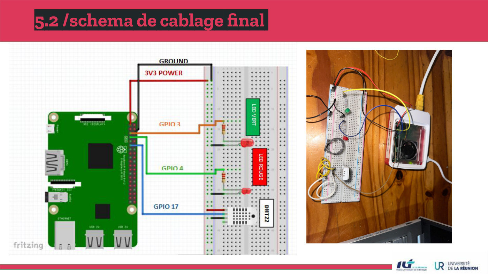
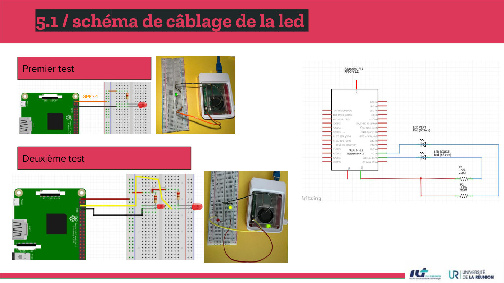
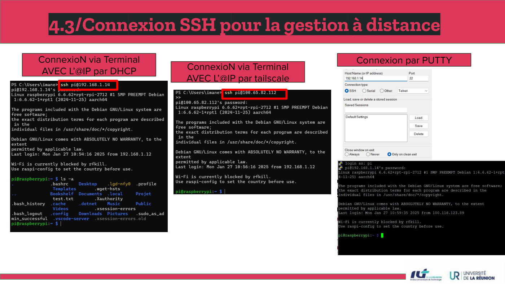
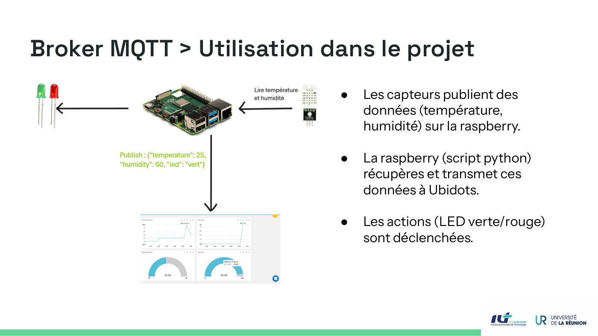
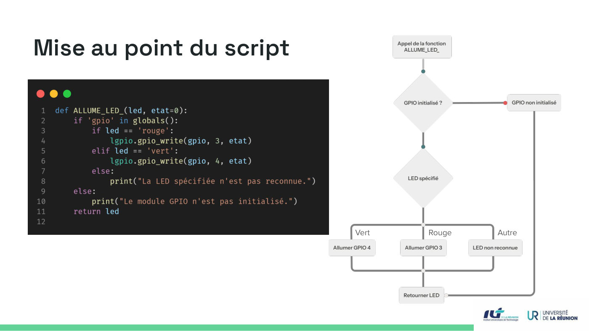

S'initier aux réseaux informatiques
Mettre en réseau un Raspberry Pi 5 pour collecter température et humidité, déclencher des LEDs et publier les mesures via un broker MQTT.
Équipe : Projet en trio : HOUMADI Soirihi, HOARAU Thomas, ABDOU Imane

Contexte et objectif
Contexte
Première SAÉ réseau du BUT : découvrir concrètement comment un équipement obtient une adresse, se rend accessible à distance et échange des données sur le réseau.
Objectif
Installer et configurer un Raspberry Pi, s'y connecter à distance, câbler un capteur et des LEDs, puis transmettre les mesures à un broker MQTT et vers un tableau de bord (Ubidots).
Ma mission
Mon rôle
Projet mené en équipe de trois, où nous avons réalisé ensemble l'ensemble de la chaîne :
- Installation de l'OS avec Raspberry Pi Imager (activation SSH, identifiants personnalisés) et flash de la carte microSD
- Récupération de l'adresse IP (DHCP du routeur Linksys, Advanced IP Scanner) et connexion à distance (terminal, PuTTY, Tailscale)
- Câblage du capteur DHT22 et des LEDs sur la plaque d'essai (GPIO 4), scripts Python dans un environnement virtuel
- Publication des mesures sur un broker MQTT et mise au point du script de pilotage des LEDs
Travaux réalisés
Préparation du Raspberry Pi
Installation via Raspberry Pi Imager : SSH activé, nom d'utilisateur et mot de passe modifiés, OS flashé sur microSD.
Accès réseau et administration à distance
Adresse obtenue par DHCP sur le routeur, repérée avec Advanced IP Scanner ; accès SSH en local ou via le VPN Tailscale (WireGuard) hors du réseau local.
Électronique et premiers scripts
Schéma de câblage d'une LED (GPIO 4), création d'un environnement virtuel Python et d'un alias envPy pour l'activer rapidement.
Collecte et diffusion des données
Lecture du DHT22 (adafruit_dht), publication des mesures sur un topic MQTT et transmission vers Ubidots.
Mise au point du script
Logique de pilotage des LEDs (vert / rouge / autre) formalisée par un logigramme puis codée en Python.
Outils et technologies
Illustrations du projet
Images extraites du rapport. Cliquez pour agrandir.




Difficultés et solutions
envPy dans le .bashrc pour activer l'environnement virtuel en une commande.Résultats obtenus
- Raspberry Pi administrable à distance (SSH local ou via VPN)
- Capteur DHT22 et LEDs câblés et pilotés par script Python
- Mesures publiées via MQTT et récupérables à tout moment et depuis n'importe où
Compétences développées
Compétences
- Adressage IP et DHCP
- Administration à distance (SSH, VPN)
- Notions d'IoT et protocole MQTT (broker, topics, clients)
- Programmation Python appliquée au matériel
- Travail en équipe et présentation orale
Ce que ce projet m'a apporté
Ce projet m'a fait toucher du doigt toute la chaîne d'un objet connecté, du câblage à la donnée exploitable, et m'a familiarisée avec l'administration à distance.
Envie d'aller plus loin ?
Le document complet détaille toutes les configurations, mesures et analyses.